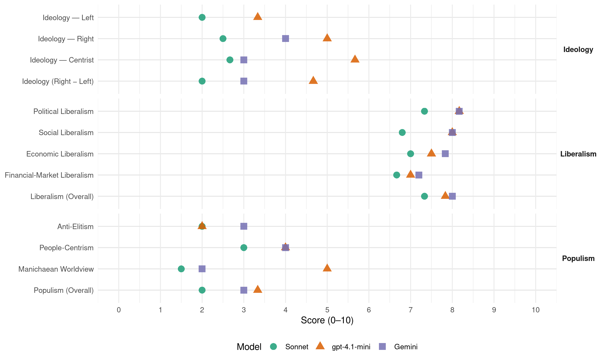

PP (Spain, 2008)
manifesto_id 33610_200803
Get full text: This site shows derived annotations and short verbatim quotes only. The full manifesto text is © Manifesto Project / WZB — obtain it via manifesto-project.wzb.eu using the manifesto_id above.
Headline scores
| Dimension | Sonnet | gpt-4.1-mini | Gemini |
|---|---|---|---|
| Populism (Overall) | 2.0 | 3.3 | 3.0 |
| Anti-Elitism | 2.0 | 2.0 | 3.0 |
| People-Centrism | 3.0 | 4.0 | 4.0 |
| Manichaean Worldview | 1.5 | 5.0 | 2.0 |
| Ideology (Right − Left) | 2.0 | 4.7 | 3.0 |
| Liberalism (Overall) | 7.3 | 7.8 | 8.0 |
| Political Liberalism | 7.3 | 8.2 | 8.2 |
| Social Liberalism | 6.8 | 8.0 | 8.0 |
| Economic Liberalism | 7.0 | 7.5 | 7.8 |
| Financial-Market Liberalism | 6.7 | 7.0 | 7.2 |
Evidence per dimension
Economic Liberalism
Gemini · score 9.0 · verified · chunk 1
“economía abierta y libre, rechazar el proteccionismo”
España debe apostar por una economía abierta y libre, rechazar el proteccionismo y el intervencionismo
Gemini · score 9.0 · verified · chunk 2
“La libertad económica, la vocación exterior, la estabilidad”
La libertad económica, la vocación exterior, la estabilidad, la transparencia del mercado y la generación de confianza serán los principios básicos de nuestra política económica.
Gemini · score 7.0 · verified · chunk 3
“fomentarán la actividad de los jóvenes emprendedores”
estudios en el extranjero, dando prioridad a los mejores expedientes académicos. Fomentarán la actividad de los jóvenes emprendedores y aumentaremos las facilidades para crear su propia empresa.
Gemini · score 7.0 · verified · chunk 4
“crear su propia empresa”
emprendedores y aumentaremos las facilidades para crear su propia empresa. Facilitaremos el derecho a la
Gemini · score 8.0 · verified · chunk 5
“respetando los principios de mercado”
fomentaremos una política de compras y programas públicos que, respetando los principios de mercado y la reglamentación de la Unión Europea, favorezca
Gemini · score 7.0 · verified · chunk 6
“flexibilizándola y dejando una mayor libertad de pactos”
Modificaremos la Ley de Arrendamientos Urbanos, flexibilizándola y dejando una mayor libertad de pactos entre el propietario y el inquilino.
gpt-4.1-mini · score 8.0 · verified · chunk 1
“Defendemos una economía libre y socialmente avanzada”
Defendemos una economía libre y socialmente avanzada, que concilie la libertad con el desarrollo de políticas que hagan más justa la prosperidad.
gpt-4.1-mini · score 8.0 · verified · chunk 2
“Garantizaremos una legislación que vele en todo momento por la seguridad jurídica”
Garantizaremos una legislación que vele en todo momento por la seguridad jurídica, evitando así que las decisiones empresariales puedan verse afectadas por interpretaciones de la Administración o por cambios de criterio no justificados.
gpt-4.1-mini · score 7.0 · verified · chunk 3
“la competencia, la responsabilidad social, la apertura e internacionalización de las universidades”
La calidad, la diversidad, la flexibilidad, la complementariedad, la competencia, la responsabilidad social, la apertura e internacionalización de las universidades, garantizan que puedan cumplir adecuadamente las funciones que les corresponde asumir.
gpt-4.1-mini · score 7.0 · verified · chunk 4
“fomentaremos la actividad de los jóvenes emprendedores”
Fomentaremos la actividad de los jóvenes emprendedores y aumentaremos las facilidades para crear su propia empresa. Promoveremos un contrato dual formación-trabajo para facilitar la inserción laboral.
gpt-4.1-mini · score 8.0 · verified · chunk 5
“Impulsaremos la rápida instalación de redes de fibra óptica como una vía para mejorar la eficiencia de la economía”
Impulsaremos la rápida instalación de redes de fibra óptica como una vía para mejorar la eficiencia de la economía. El modelo regulatorio sectorial se orientará con el objetivo de asegurar una elevada y rápida inversión.
gpt-4.1-mini · score 7.0 · verified · chunk 6
“Velará por el buen funcionamiento del sistema, aportará financiación suficiente”
Administración Central. Velará por el buen funcionamiento del sistema, aportará financiación suficiente, desarrollará el marco normativo de su competencia. Comunidades Autónomas. Diseñarán los marcos legales y desarrollarán políticas activas con el fin de agilizar los procesos de transformación de suelo.
Sonnet · score 8.0 · verified · chunk 1
“economía abierta y libre, rechazar el proteccionismo”
España debe apostar por una economía abierta y libre, rechazar el proteccionismo y el intervencionismo, y aprovechar mejor las oportunidades de la globalización. Reducir impuestos, controlar el peso del sector público en la economía y garantizar un mercado interior único.
Sonnet · score 8.0 · verified · chunk 2
“liberalización de los mercados, la internacionalización de nuestras empresas”
Apostamos por un crecimiento económico sin desequilibrios, basado en la estabilidad presupuestaria, la estabilidad de precios, las reformas fiscales, la liberalización de los mercados, la internacionalización de nuestras empresas y el fortalecimiento de nuestro tejido productivo
Sonnet · score 6.0 · verified · chunk 3
“la competencia o la mejora de los niveles”
son necesarias otras reformas estructurales en áreas como la educación, la innovación tecnológica, la competencia o la mejora de los niveles de protección social.
Sonnet · score 7.0 · verified · chunk 4
“mercado más transparente y competitivo”
La política de vivienda debe garantizar un mercado más transparente y competitivo.
Sonnet · score 7.0 · verified · chunk 5
“Simplificaremos las reglas del mercado y potenciaremos”
Simplificaremos las reglas del mercado y potenciaremos la libertad de contratación, impulsando el funcionamiento de los contratos bilaterales y a plazo.
Sonnet · score 6.0 · verified · chunk 6
“aumentar la transparencia y competencia ante el consumidor”
Sector Inmobiliario: Se comprometerá a aumentar la transparencia y competencia ante el consumidor, agilizar las promociones
Financial-Market Liberalism
Gemini · score 8.0 · verified · chunk 1
“ordenación general del crédito y la banca”
la ordenación general de la economía, en especial, la garantía de la unidad de mercado, la ordenación general del crédito y la banca
Gemini · score 8.0 · verified · chunk 2
“eliminación de los obstáculos para la integración de mercados financieros”
desarrollo de infraestructuras de comunicación; redes de transporte energético; movilidad laboral; eliminación de los obstáculos para la integración de mercados financieros sin perjuicio de su supervisión.
Gemini · score 6.0 · verified · chunk 4
“préstamos a interés preferencial”
menores de 35 años a préstamos a interés preferencial y por el 100 por
Gemini · score 7.0 · verified · chunk 5
“transparencia de los servicios financieros”
utilizando las nuevas tecnologías de la información y la comunicación. Velaremos por el correcto uso de los datos personales en poder de las empresas y las Administraciones, y fomentaremos la difusión de campañas de información sobre los derechos de los ciudadanos con respecto a sus datos personales. Transparencia de los servicios financieros Estableceremos requisitos de publicidad de tarifas a las
Gemini · score 7.0 · verified · chunk 6
“refuercen la liquidez y faciliten la emisión de títulos hipotecarios”
Revitalizaremos el mercado hipotecario con medidas que refuercen la liquidez y faciliten la emisión de títulos hipotecarios haciendo más fácil la financiación
gpt-4.1-mini · score 7.0 · verified · chunk 1
“la ordenación general del crédito y la banca”
Garantizar la estabilidad del Estado de las Autonomías; dotar al Estado de los instrumentos necesarios para garantizar la igualdad de los españoles en derechos, deberes y oportunidades; establecer los mecanismos que aseguren el consenso y reforzar la calidad de nuestra democracia. En particular: la política exterior, defensa y seguridad (con coordinación efectiva de las Fuerzas y Cuerpos de seguridad autonómicos), la ordenación general de la economía, en especial, la garantía de la unidad de mercado, la ordenación general del crédito y la banca, o la coordinación de la gestión de crisis, entre otras (artículo 149 y 93 CE).
gpt-4.1-mini · score 7.0 · verified · chunk 2
“Impulsaremos modificaciones en la regulación financiera para garantizar la seguridad jurídica”
Impulsaremos modificaciones en la regulación financiera para garantizar la seguridad jurídica, el buen funcionamiento de los mercados y la protección de los consumidores. Propondremos al Parlamento un modelo de supervisión de carácter dual para el sector financiero que atribuya al Banco de España la vigilancia de la solvencia y la actividad de todas las entidades financieras, y a la Comisión Nacional del Mercado de Valores, la supervisión del buen funcionamiento de los mercados financieros.
gpt-4.1-mini · score 7.0 · verified · chunk 5
“Estableceremos un marco de información mínima y comparable que todas las entidades financieras deberán suministrar en las ofertas de sus productos”
Estableceremos un marco de información mínima y comparable que todas las entidades financieras deberán suministrar en las ofertas de sus productos, de forma que el cliente pueda conocer y comparar las características y el precio que va a pagar en cada una de ellas.
gpt-4.1-mini · score 7.0 · verified · chunk 6
“Sector financiero: Aumentará la protección al consumidor y promoverá el desarrollo”
Sector financiero: Aumentará la protección al consumidor y promoverá el desarrollo de productos que contribuyan a proteger a las familias de las variaciones en los tipos de interés. Se constituirá una Mesa Nacional para la vivienda y el suelo que, con carácter permanente y periodicidad en las reuniones, vigilará el cumplimiento del Acuerdo.
Sonnet · score 7.0 · verified · chunk 1
“evolución de los mercados financieros”
La integración de la economía mundial, la evolución de los mercados financieros, la violación de los derechos humanos, la falta de libertad, la lucha contra la pobreza, las amenazas a la seguridad y el calentamiento global son retos que afectan a la vida diaria de las personas.
Sonnet · score 8.0 · verified · chunk 2
“transparencia de los mercados de valores, banca y seguros”
Profundizaremos en la transparencia de los mercados de valores, banca y seguros, haciendo más accesible al cliente la información sobre los instrumentos en los que invierte y sus riesgos.
Sonnet · score 5.0 · verified · chunk 3
“viabilidad financiera y su capacidad de adaptación”
La modernización de los sistemas de protección social, incluidas las pensiones, es básica para garantizar su adecuación social, su viabilidad financiera y su capacidad de adaptación.
Sonnet · score 6.0 · verified · chunk 4
“competencia entre entidades y agentes financieros”
Incentivaremos la competencia entre entidades y agentes financieros con el objetivo de lograr el abaratamiento del coste de las remesas.
Sonnet · score 7.0 · verified · chunk 5
“Mejoraremos la transparencia e información de los productos hipotecarios”
Mejoraremos la transparencia e información de los productos hipotecarios, especialmente de aquellos en los que el cliente asume mayores riesgos como los de tipo de interés variable
Sonnet · score 7.0 · verified · chunk 6
“Aumentará la protección al consumidor y promoverá el desarrollo de productos”
Sector financiero: Aumentará la protección al consumidor y promoverá el desarrollo de productos que contribuyan a proteger a las familias de las variaciones en los tipos de interés.
Political Liberalism
Gemini · score 9.0 · verified · chunk 1
“independencia de los jueces y tribunales”
La independencia de los jueces y tribunales es uno de los fundamentos del Estado de Derecho
Gemini · score 8.0 · verified · chunk 2
“defensa de la democracia y de los derechos humanos”
Nuestras Fuerzas Armadas contribuirán a la paz, a la seguridad colectiva y a la defensa de la democracia y de los derechos humanos, en línea con los objetivos de nuestra política exterior.
Gemini · score 8.0 · verified · chunk 3
“valores cívicos, basados en los valores constitucionales”
la asignatura específica “Educación para la Ciudadanía” y la integración de la formación cívica, basada en los valores constitucionales, en las materias propias de los conocimientos sociales.
Gemini · score 8.0 · verified · chunk 4
“derechos humanos y la democracia”
especialmente en el desarrollo mundial de la libertad, los derechos humanos y la democracia, la lucha contra la pobreza
Gemini · score 8.0 · verified · chunk 5
“garantizar el pluralismo y la libertad de expresión”
ámbito audiovisual con el fin de aumentar las opciones de los usuarios, garantizar el pluralismo y la libertad de expresión y contribuir a la proyección internacional de nuestras empresas
Gemini · score 8.0 · verified · chunk 6
“la Constitución es la mejor garantía de un futuro de libertad”
Defendemos que la Constitución es la mejor garantía de un futuro de libertad, progreso y justicia para todos los españoles.
gpt-4.1-mini · score 9.0 · verified · chunk 1
“Fortaleceremos la independencia del Poder Judicial”
Impulsaremos las reformas que restablezcan la confianza de los ciudadanos en nuestra democracia constitucional. Fortaleceremos la independencia del Poder Judicial, la autonomía y profesionalidad de los organismos de regulación, el protagonismo de las Cortes Generales y la lucha contra la corrupción.
gpt-4.1-mini · score 8.0 · verified · chunk 2
“La defensa de los intereses nacionales y de los valores constitucionales”
La política exterior española se fundamentará en la defensa de los intereses nacionales y de los valores constitucionales. España debe desempeñar un papel de vanguardia en la construcción europea.
gpt-4.1-mini · score 8.0 · verified · chunk 3
“la libertad de los estudiantes, de los profesores y de los centros académicos”
Promoveremos, como valor primordial de la vida universitaria, la libertad de los estudiantes, de los profesores y de los centros académicos, para que cada cual ejerza sus derechos con la asunción de las correspondientes obligaciones.
gpt-4.1-mini · score 8.0 · verified · chunk 4
“garantizar el derecho a la igualdad”
Queremos una sociedad integrada, que garantice el derecho a la igualdad y que no acepte divisiones en función del origen étnico o las creencias religiosas de cada uno de sus miembros. Nuestra política de inmigración se sustenta en dos ejes básicos: garantizar el control de las fronteras, los flujos legales y el máximo respeto a la ley y a los derechos humanos.
gpt-4.1-mini · score 8.0 · verified · chunk 5
“Garantizaremos el derecho subjetivo de los ciudadanos a la promoción de la autonomía personal y a la atención a las situaciones de dependencia”
Garantizaremos el derecho subjetivo de los ciudadanos a la promoción de la autonomía personal y a la atención a las situaciones de dependencia. Este derecho se hará efectivo a través del Sistema Nacional de Autonomía Personal y Atención a la Dependencia (SAAD), en todo el territorio nacional.
gpt-4.1-mini · score 8.0 · verified · chunk 6
“Defendemos que la Constitución es la mejor garantía de un futuro de libertad”
Creemos que la España democrática es la expresión unitaria de la voluntad de sus ciudadanos por compartir un proyecto común de convivencia. Defendemos que la Constitución es la mejor garantía de un futuro de libertad, progreso y justicia para todos los españoles. Queremos la España diversa y plural que representan nuestras Comunidades Autónomas.
Sonnet · score 8.0 · verified · chunk 1
“Fortaleceremos la independencia del Poder Judicial”
Impulsaremos las reformas que restablezcan la confianza de los ciudadanos en nuestra democracia constitucional. Fortaleceremos la independencia del Poder Judicial, la autonomía y profesionalidad de los organismos de regulación, el protagonismo de las Cortes Generales y la lucha contra la corrupción.
Sonnet · score 8.0 · verified · chunk 2
“defensa de la democracia y de los derechos humanos”
Nuestras Fuerzas Armadas contribuirán a la paz, a la seguridad colectiva y a la defensa de la democracia y de los derechos humanos, en línea con los objetivos de nuestra política exterior.
Sonnet · score 7.0 · verified · chunk 3
“valores y principios de la Constitución”
La asunción plena de los valores y principios de la Constitución por parte de todos, será el criterio fundamental que regirá la convivencia escolar.
Sonnet · score 7.0 · verified · chunk 4
“libertad, los derechos humanos y la democracia”
especialmente en el desarrollo mundial de la libertad, los derechos humanos y la democracia, la lucha contra la pobreza y el cambio climático.
Sonnet · score 7.0 · verified · chunk 5
“garantizar el pluralismo y la libertad de expresión”
Impulsaremos las nuevas tecnologías aplicadas al ámbito audiovisual…con el fin de aumentar las opciones de los usuarios, garantizar el pluralismo y la libertad de expresión
Sonnet · score 7.0 · verified · chunk 6
“la Constitución es la mejor garantía de un futuro de libertad”
Defendemos que la Constitución es la mejor garantía de un futuro de libertad, progreso y justicia para todos los españoles.
Liberalism (Overall)
Gemini · score 9.0 · verified · chunk 1
“economía abierta y libre, rechazar el proteccionismo”
España debe apostar por una economía abierta y libre, rechazar el proteccionismo y el intervencionismo
Gemini · score 8.0 · verified · chunk 2
“La libertad económica, la vocación exterior, la estabilidad”
La libertad económica, la vocación exterior, la estabilidad, la transparencia del mercado y la generación de confianza serán los principios básicos de nuestra política económica.
Gemini · score 8.0 · verified · chunk 3
“La educación en una sociedad avanzada es sinónimo de libertad”
desarrollo personal y debe situar a la persona en el centro del sistema. La educación en una sociedad avanzada es sinónimo de libertad, prosperidad e igualdad de oportunidades.
Gemini · score 7.0 · verified · chunk 4
“derechos humanos y la democracia”
especialmente en el desarrollo mundial de la libertad, los derechos humanos y la democracia, la lucha contra la pobreza
Gemini · score 8.0 · verified · chunk 5
“respetando los principios de mercado”
fomentaremos una política de compras y programas públicos que, respetando los principios de mercado y la reglamentación de la Unión Europea, favorezca
Gemini · score 8.0 · verified · chunk 6
“la Constitución es la mejor garantía de un futuro de libertad”
Defendemos que la Constitución es la mejor garantía de un futuro de libertad, progreso y justicia para todos los españoles.
gpt-4.1-mini · score 8.0 · verified · chunk 1
“Impulsaremos las reformas que restablezcan la confianza”
Impulsaremos las reformas que restablezcan la confianza de los ciudadanos en nuestra democracia constitucional. Fortaleceremos la independencia del Poder Judicial, la autonomía y profesionalidad de los organismos de regulación, el protagonismo de las Cortes Generales y la lucha contra la corrupción.
gpt-4.1-mini · score 8.0 · verified · chunk 2
“Garantizaremos una legislación que vele en todo momento por la seguridad jurídica”
Garantizaremos una legislación que vele en todo momento por la seguridad jurídica, evitando así que las decisiones empresariales puedan verse afectadas por interpretaciones de la Administración o por cambios de criterio no justificados.
gpt-4.1-mini · score 8.0 · verified · chunk 3
“la libertad de los estudiantes, de los profesores y de los centros académicos”
Promoveremos, como valor primordial de la vida universitaria, la libertad de los estudiantes, de los profesores y de los centros académicos, para que cada cual ejerza sus derechos con la asunción de las correspondientes obligaciones.
gpt-4.1-mini · score 8.0 · verified · chunk 4
“garantizar el derecho a la igualdad”
Queremos una sociedad integrada, que garantice el derecho a la igualdad y que no acepte divisiones en función del origen étnico o las creencias religiosas de cada uno de sus miembros. Nuestra política de inmigración se sustenta en dos ejes básicos: garantizar el control de las fronteras, los flujos legales y el máximo respeto a la ley y a los derechos humanos.
gpt-4.1-mini · score 8.0 · verified · chunk 5
“Garantizaremos el derecho subjetivo de los ciudadanos a la promoción de la autonomía personal y a la atención a las situaciones de dependencia”
Garantizaremos el derecho subjetivo de los ciudadanos a la promoción de la autonomía personal y a la atención a las situaciones de dependencia. Este derecho se hará efectivo a través del Sistema Nacional de Autonomía Personal y Atención a la Dependencia (SAAD), en todo el territorio nacional.
gpt-4.1-mini · score 7.0 · verified · chunk 6
“Defendemos que la Constitución es la mejor garantía de un futuro de libertad”
Creemos que la España democrática es la expresión unitaria de la voluntad de sus ciudadanos por compartir un proyecto común de convivencia. Defendemos que la Constitución es la mejor garantía de un futuro de libertad, progreso y justicia para todos los españoles.
Sonnet · score 8.0 · verified · chunk 1
“Defendemos una economía libre y socialmente avanzada”
Defendemos una economía libre y socialmente avanzada, que concilie la libertad con el desarrollo de políticas que hagan más justa la prosperidad.
Sonnet · score 8.0 · verified · chunk 2
“Las sociedades más avanzadas apuestan por una economía abierta y libre”
Las sociedades más avanzadas apuestan por una economía abierta y libre. Rechazan el proteccionismo y el intervencionismo, y aprovechan mejor las oportunidades de la globalización.
Sonnet · score 7.0 · verified · chunk 3
“plena igualdad de derechos, y cualquiera que sea su orientación sexual”
garantizar la libertad de todos en la elección de sus opciones de vida y en su plena realización personal, con plena igualdad de derechos, y cualquiera que sea su orientación sexual.
Sonnet · score 7.0 · verified · chunk 4
“mercado más transparente y competitivo”
La política de vivienda debe garantizar un mercado más transparente y competitivo.
Sonnet · score 7.0 · verified · chunk 5
“Simplificaremos las reglas del mercado y potenciaremos”
Simplificaremos las reglas del mercado y potenciaremos la libertad de contratación, impulsando el funcionamiento de los contratos bilaterales y a plazo.
Sonnet · score 7.0 · verified · chunk 6
“Reduciremos y reformaremos el Impuesto sobre Transmisiones Patrimoniales”
Reduciremos y reformaremos el Impuesto sobre Transmisiones Patrimoniales, eliminando el efecto cascada, para evitar la doble tributación
Anti-Elitism
Gemini · score 3.0 · verified · chunk 1
“el gobierno ha roto los consensos”
Durante esta legislatura el gobierno ha roto los consensos en los que se fundaba nuestra convivencia
Gemini · score 3.0 · verified · chunk 6
“no estamos ligados a ningún pacto inconfesable”
Nuestro único compromiso es el servicio a España y a los españoles. No estamos ligados a ningún pacto inconfesable ni tenemos ninguna agenda oculta.
gpt-4.1-mini · score 2.0 · verified · chunk 1
“el gobierno ha roto los consensos”
Durante esta legislatura el gobierno ha roto los consensos en los que se fundaba nuestra convivencia y ha desatendido la sostenibilidad de nuestro modelo económico y social.
gpt-4.1-mini · score 2.0 · verified · chunk 2
“El intervencionismo en la vida de las empresas, la injerencia en la labor de los organismos reguladores”
El intervencionismo en la vida de las empresas, la injerencia en la labor de los organismos reguladores, la falta de una agenda de reformas liberalizadoras y las contradicciones en el equipo económico del gobierno, han dañado significativamente la imagen y la confianza en la economía española.
gpt-4.1-mini · score 2.0 · verified · chunk 4
“rechazo a la inmigración ilegal”
Prohibiremos por ley las regularizaciones masivas, transmitiendo así un mensaje claro e inequívoco de rechazo a la inmigración ilegal. Crearemos una Agencia de Inmigración y Empleo que facilite la selección, formación y contratación de trabajadores extranjeros con plenas garantías.
Sonnet · score 3.0 · verified · chunk 1
“el gobierno ha roto los consensos”
Durante esta legislatura el gobierno ha roto los consensos en los que se fundaba nuestra convivencia y ha desatendido la sostenibilidad de nuestro modelo económico y social.
Sonnet · score 2.0 · verified · chunk 2
“El intervencionismo en la vida de las empresas”
El intervencionismo en la vida de las empresas, la injerencia en la labor de los organismos reguladores, la falta de una agenda de reformas liberalizadoras y las contradicciones en el equipo económico del gobierno, han dañado significativamente la imagen y la confianza en la economía española.
Sonnet · score 2.0 · verified · chunk 3
“el gobierno no ha sabido dar una respuesta adecuada”
El envejecimiento de la población en las sociedades avanzadas plantea grandes desafíos a los que el gobierno no ha sabido dar una respuesta adecuada.
Sonnet · score 2.0 · verified · chunk 4
“la demagogia y la improvisación”
La política de inmigración debe responder a esta realidad y no dejarse guiar por la demagogia y la improvisación.
Sonnet · score 1.0 · verified · chunk 5
“lucha contra el fraude y la corrupción”
Impulsaremos un Acuerdo Nacional sobre la vivienda y el suelo…la lucha contra el fraude y la corrupción, y la definición de los objetivos anuales
Sonnet · score 2.0 · verified · chunk 6
“confrontación provocada y consentida por el gobierno socialista”
supere la confrontación provocada y consentida por el gobierno socialista. Mediar y arbitrar dentro del sector
Ideology — Centrist
Gemini · score 3.0 · verified · chunk 1
“Somos una formación política de centro”
NUESTROS PRINCIPIOS Somos una formación política de centro. Defendemos los valores de la libertad
gpt-4.1-mini · score 7.0 · verified · chunk 1
“Somos una formación política de centro”
Somos una formación política de centro. Defendemos los valores de la libertad, la igualdad, la concordia y la justicia que inspiran nuestra España democrática.
gpt-4.1-mini · score 4.0 · verified · chunk 2
“El protagonista de la política económica debe ser la persona: el ciudadano trabajador, consumidor, ahorrador, inversor y emprendedor”
Principios El protagonista de la política económica debe ser la persona: el ciudadano trabajador, consumidor, ahorrador, inversor y emprendedor que participa en una economía cada vez más globalizada.
gpt-4.1-mini · score 6.0 · verified · chunk 4
“sociedad pluralista, enriquecida por acentos diferentes”
Queremos una sociedad pluralista, enriquecida por acentos diferentes que decide compartir una misma lengua y los mismos valores. La nación española es sociedad de acogida.
Sonnet · score 3.0 · verified · chunk 1
“Somos una formación política de centro”
Las ideas claras NUESTROS PRINCIPIOS Somos una formación política de centro. Defendemos los valores de la libertad, la igualdad, la concordia y la justicia que inspiran nuestra España democrática.
Sonnet · score 2.0 · verified · chunk 2
“Reconstruiremos el consenso para hacer de la política exterior”
Reconstruiremos el consenso para hacer de la política exterior un objetivo compartido al servicio de los valores de nuestra democracia y de sus intereses.
Sonnet · score 3.0 · verified · chunk 3
“Queremos construir la España de la igualdad”
Queremos construir la España de la igualdad de oportunidades y la solidaridad para alcanzar unos niveles de bienestar equiparables.
Sonnet · score 2.0 · verified · chunk 4
“política de inmigración responsable y ordenada”
Asumimos como objetivo desarrollar una política de inmigración responsable y ordenada, que trabaje por una política común en la Unión Europea.
Sonnet · score 2.0 · verified · chunk 5
“en interés de toda la sociedad española”
Garantizaremos un modelo de televisión pública con contenidos de calidad y de servicio público en interés de toda la sociedad española
Sonnet · score 4.0 · verified · chunk 6
“proyecto de Gobierno coherente para toda España”
Presentamos un proyecto de Gobierno coherente para toda España, que quiere responder a las necesidades y aspiraciones
Ideology — Left
gpt-4.1-mini · score 3.0 · verified · chunk 1
“una economía libre y socialmente avanzada”
Defendemos una economía libre y socialmente avanzada, que concilie la libertad con el desarrollo de políticas que hagan más justa la prosperidad.
gpt-4.1-mini · score 3.0 · verified · chunk 2
“Lucharemos activamente contra cualquier forma de discriminación y de desigualdad social”
Nuestro sistema de bienestar es un éxito de la democracia y de la sociedad española que debemos proteger y mejorar. La protección de nuestro sistema de bienestar exige un claro compromiso con la libertad y con la igualdad. Lucharemos activamente contra cualquier forma de discriminación y de desigualdad social.
gpt-4.1-mini · score 4.0 · verified · chunk 4
“combatir la pobreza y la exclusión social”
Impulsaremos una política transversal de igualdad e inclusión, que coloque la dignidad de la persona y la realización individual como una prioridad de nuestro modelo social. El objetivo ha de ser crecer más y mejor en términos distributivos para combatir la pobreza y la exclusión social.
Sonnet · score 1.0 · verified · chunk 1
“rechazar el proteccionismo y el intervencionismo”
España debe apostar por una economía abierta y libre, rechazar el proteccionismo y el intervencionismo, y aprovechar mejor las oportunidades de la globalización.
Sonnet · score 1.0 · verified · chunk 2
“luchar contra la pobreza y la enfermedad”
África, para luchar contra el hambre y la enfermedad y para la promoción de los derechos humanos en el continente que tiene los mayores índices de pobreza del mundo.
Sonnet · score 4.0 · verified · chunk 3
“Los salarios han participado menos del crecimiento”
Los salarios han participado menos del crecimiento de la riqueza en la economía española.
Sonnet · score 1.0 · verified · chunk 4
“combatir la exclusión social”
Promoveremos en colaboración con el resto de Administraciones Públicas y los interlocutores sociales, un Plan Transversal que combata la exclusión social
Sonnet · score 3.0 · verified · chunk 5
“Reduciremos el Impuesto de Sociedades al 20”
Rebajaremos los impuestos a los autónomos y a las PYMEs: Reduciremos el Impuesto de Sociedades al 20 por 100 para las pequeñas y medianas empresas.
Sonnet · score 2.0 · verified · chunk 6
“igualdad y la solidaridad entre todos los españoles”
Hoy somos la única formación política que defiende la igualdad y la solidaridad entre todos los españoles.
Ideology (Right − Left)
Gemini · score 3.0 · verified · chunk 1
“Somos una formación política de centro”
NUESTROS PRINCIPIOS Somos una formación política de centro. Defendemos los valores de la libertad
Gemini · score 3.0 · verified · chunk 6
“el servicio a España y a los españoles”
Nuestro único compromiso es el servicio a España y a los españoles. No estamos ligados a ningún pacto inconfesable
gpt-4.1-mini · score 6.0 · verified · chunk 1
“Somos una formación política de centro”
Somos una formación política de centro. Defendemos los valores de la libertad, la igualdad, la concordia y la justicia que inspiran nuestra España democrática.
gpt-4.1-mini · score 3.0 · verified · chunk 2
“Lucharemos activamente contra cualquier forma de discriminación y de desigualdad social”
Nuestro sistema de bienestar es un éxito de la democracia y de la sociedad española que debemos proteger y mejorar. La protección de nuestro sistema de bienestar exige un claro compromiso con la libertad y con la igualdad. Lucharemos activamente contra cualquier forma de discriminación y de desigualdad social.
gpt-4.1-mini · score 5.0 · verified · chunk 4
“rechazo a la inmigración ilegal”
Prohibiremos por ley las regularizaciones masivas, transmitiendo así un mensaje claro e inequívoco de rechazo a la inmigración ilegal. Crearemos una Agencia de Inmigración y Empleo que facilite la selección, formación y contratación de trabajadores extranjeros con plenas garantías.
Sonnet · score 3.0 · verified · chunk 1
“Somos una formación política de centro”
Somos una formación política de centro. Defendemos los valores de la libertad, la igualdad, la concordia y la justicia que inspiran nuestra España democrática.
Sonnet · score 2.0 · verified · chunk 2
“lucha contra la inmigración ilegal”
Promoveremos una verdadera política común de inmigración europea basada en el control de los flujos migratorios en cooperación con los países de origen y de tránsito, la lucha contra la inmigración ilegal y la integración social de los inmigrantes
Sonnet · score 2.0 · verified · chunk 3
“Los salarios han participado menos del crecimiento”
Los salarios han participado menos del crecimiento de la riqueza en la economía española.
Sonnet · score 2.0 · verified · chunk 4
“control de las fronteras eficaz”
Queremos un control de las fronteras eficaz y derrotar a las mafias.
Sonnet · score 1.0 · verified · chunk 5
“lucha contra el fraude y la corrupción”
Impulsaremos un Acuerdo Nacional sobre la vivienda y el suelo…la lucha contra el fraude y la corrupción
Sonnet · score 2.0 · verified · chunk 6
“Nuestras prioridades son las de los ciudadanos”
Nuestras prioridades son las de los ciudadanos. Nuestros intereses, los de todos los españoles.
Ideology — Right
Gemini · score 4.0 · verified · chunk 1
“controlaremos la inmigración en situación irregular”
Controlaremos la inmigración en situación irregular y estableceremos un nuevo modelo de integración
Gemini · score 4.0 · verified · chunk 6
“el servicio a España y a los españoles”
Nuestro único compromiso es el servicio a España y a los españoles. No estamos ligados a ningún pacto inconfesable
gpt-4.1-mini · score 8.0 · verified · chunk 1
“ningún territorio, ninguna parte de la población están legitimados”
Ningún territorio, ninguna parte de la población están legitimados para privar de ese poder de decisión al conjunto de los españoles.
gpt-4.1-mini · score 2.0 · verified · chunk 2
“Todo extranjero que comenta un delito menor deberá ser expulsado de inmediato”
Todo extranjero que comenta un delito menor deberá ser expulsado de inmediato, de acuerdo con lo que se establezca en el Código Penal, y con las debidas garantías judiciales.
gpt-4.1-mini · score 5.0 · verified · chunk 4
“rechazo a la inmigración ilegal”
Prohibiremos por ley las regularizaciones masivas, transmitiendo así un mensaje claro e inequívoco de rechazo a la inmigración ilegal. Fortaleceremos el control de las fronteras de nuestro país para frenar la entrada irregular.
Sonnet · score 4.0 · verified · chunk 1
“Controlaremos la inmigración en situación irregular”
Controlaremos la inmigración en situación irregular y estableceremos un nuevo modelo de integración para quienes han elegido vivir entre nosotros, basado en el respeto a nuestros principios y valores constitucionales.
Sonnet · score 3.0 · verified · chunk 2
“lucha contra la inmigración ilegal”
Promoveremos una verdadera política común de inmigración europea basada en el control de los flujos migratorios en cooperación con los países de origen y de tránsito, la lucha contra la inmigración ilegal y la integración social de los inmigrantes
Sonnet · score 2.0 · verified · chunk 3
“La inserción de alumnos inmigrantes en el sistema educativo”
La inserción de alumnos inmigrantes en el sistema educativo exige un esfuerzo suplementario que garantice su integración.
Sonnet · score 3.0 · verified · chunk 4
“control de las fronteras eficaz”
Queremos un control de las fronteras eficaz y derrotar a las mafias.
Sonnet · score 1.0 · verified · chunk 5
“Exigiremos que los productos de terceros países”
Exigiremos que los productos de terceros países se sometan, para su entrada en la Unión Europea, a los mismos requisitos de seguridad alimentaria
Sonnet · score 2.0 · verified · chunk 6
“Una nación orgullosa de sí misma”
Queremos una España que cuente entre los grandes países del mundo. Una nación orgullosa de sí misma, de lo que ha sido
Manichaean Worldview
Gemini · score 2.0 · verified · chunk 1
“el enemigo más importante de nuestra democracia”
El terrorismo es el enemigo más importante de nuestra democracia. No es la manifestación de un conflicto político.
gpt-4.1-mini · score 7.0 · verified · chunk 1
“El terrorismo es el enemigo más importante de nuestra democracia”
El terrorismo es el enemigo más importante de nuestra democracia. No es la manifestación de un conflicto político. Es la manifestación del proyecto totalitario que una minoría trata de imponer, mediante el terror y el asesinato.
gpt-4.1-mini · score 3.0 · verified · chunk 4
“las mafias que trafican y explotan a las personas”
El ineficaz control de fronteras y una regularización masiva de inmigrantes rechazada por la Unión Europea ha causado un “efecto llamada” que ha convertido a España en uno de los destinos preferidos de las mafias que trafican y explotan a las personas.
Sonnet · score 3.0 · verified · chunk 1
“El terrorismo es el enemigo más importante”
El terrorismo es el enemigo más importante de nuestra democracia. No es la manifestación de un conflicto político. Es la manifestación del proyecto totalitario que una minoría trata de imponer.
Sonnet · score 1.0 · verified · chunk 2
“La política exterior de esta legislatura ha hecho de España un país menos relevante”
La política exterior de esta legislatura ha hecho de España un país menos relevante. Su credibilidad, capacidad de interlocución y de influencia en la escena internacional han quedado disminuidos.
Sonnet · score 1.0 · verified · chunk 3
“Las medidas desarrolladas en los últimos años no han alcanzado”
Las medidas desarrolladas en los últimos años no han alcanzado los objetivos necesarios.
Sonnet · score 1.0 · verified · chunk 4
“mafias que trafican y explotan”
ha convertido a España en uno de los destinos preferidos de las mafias que trafican y explotan a las personas.
Sonnet · score 1.0 · verified · chunk 5
“evitar casos como los de FORUM FILATELICO”
Estableceremos las medidas necesarias para equiparar los derechos de los inversores…para evitar casos como los de FORUM FILATELICO S.A y AFINSA BIENES TANGIBLES S.A.
Sonnet · score 2.0 · verified · chunk 6
“ningún pacto inconfesable ni tenemos ninguna agenda oculta”
No estamos ligados a ningún pacto inconfesable ni tenemos ninguna agenda oculta. Nos presentamos sin nada que esconder
People-Centrism
Gemini · score 4.0 · verified · chunk 1
“La soberanía nacional reside en el pueblo”
La soberanía nacional reside en el pueblo español, y es única e indivisible.
Gemini · score 4.0 · verified · chunk 6
“Nuestras prioridades son las de los ciudadanos”
Nuestras prioridades son las de los ciudadanos. Nuestros intereses, los de todos los españoles.
gpt-4.1-mini · score 6.0 · verified · chunk 1
“la soberanía nacional reside en el pueblo español”
La soberanía nacional reside en el pueblo español, y es única e indivisible. Defendemos que la Constitución, sus instituciones y los símbolos que establece, son la mejor garantía de futuro para la libertad, el progreso y el bienestar de los españoles.
gpt-4.1-mini · score 3.0 · verified · chunk 2
“El protagonista de la política económica debe ser la persona: el ciudadano trabajador, consumidor, ahorrador, inversor y emprendedor”
Principios El protagonista de la política económica debe ser la persona: el ciudadano trabajador, consumidor, ahorrador, inversor y emprendedor que participa en una economía cada vez más globalizada.
gpt-4.1-mini · score 3.0 · verified · chunk 4
“La nación española es sociedad de acogida”
Queremos una sociedad pluralista, enriquecida por acentos diferentes que decide compartir una misma lengua y los mismos valores. La nación española es sociedad de acogida. Nuestros valores constitucionales son la base sobre la que debe producirse la integración.
Sonnet · score 4.0 · verified · chunk 1
“La soberanía nacional reside en el pueblo español”
Afirmamos que España es una nación de ciudadanos libres e iguales en derechos y en deberes. La soberanía nacional reside en el pueblo español, y es única e indivisible.
Sonnet · score 2.0 · verified · chunk 2
“El protagonista de la política económica debe ser la persona”
El protagonista de la política económica debe ser la persona: el ciudadano trabajador, consumidor, ahorrador, inversor y emprendedor que participa en una economía cada vez más globalizada.
Sonnet · score 3.0 · verified · chunk 3
“el gran logro de la sociedad española”
puede garantizarse el futuro de nuestro sistema de bienestar, el gran logro de la sociedad española.
Sonnet · score 3.0 · verified · chunk 4
“todos los ciudadanos los mismos servicios”
la universalidad del derecho a la asistencia y la igualdad para garantizar a todos los ciudadanos los mismos servicios y prestaciones.
Sonnet · score 2.0 · verified · chunk 5
“en interés de toda la sociedad española”
Garantizaremos un modelo de televisión pública con contenidos de calidad y de servicio público en interés de toda la sociedad española
Sonnet · score 4.0 · verified · chunk 6
“Nuestras prioridades son las de los ciudadanos”
porque persiguen el interés de todos. Nuestras prioridades son las de los ciudadanos. Nuestros intereses, los de todos los españoles.
Populism (Overall)
Gemini · score 3.0 · verified · chunk 1
“el gobierno ha roto los consensos”
Durante esta legislatura el gobierno ha roto los consensos en los que se fundaba nuestra convivencia
Gemini · score 3.0 · verified · chunk 6
“Nuestras prioridades son las de los ciudadanos”
Nuestras prioridades son las de los ciudadanos. Nuestros intereses, los de todos los españoles.
gpt-4.1-mini · score 5.0 · verified · chunk 1
“el gobierno ha roto los consensos”
Durante esta legislatura el gobierno ha roto los consensos en los que se fundaba nuestra convivencia y ha desatendido la sostenibilidad de nuestro modelo económico y social.
gpt-4.1-mini · score 2.0 · verified · chunk 2
“El intervencionismo en la vida de las empresas, la injerencia en la labor de los organismos reguladores”
El intervencionismo en la vida de las empresas, la injerencia en la labor de los organismos reguladores, la falta de una agenda de reformas liberalizadoras y las contradicciones en el equipo económico del gobierno, han dañado significativamente la imagen y la confianza en la economía española.
gpt-4.1-mini · score 3.0 · verified · chunk 4
“rechazo a la inmigración ilegal”
Prohibiremos por ley las regularizaciones masivas, transmitiendo así un mensaje claro e inequívoco de rechazo a la inmigración ilegal. Crearemos una Agencia de Inmigración y Empleo que facilite la selección, formación y contratación de trabajadores extranjeros con plenas garantías.
Sonnet · score 3.0 · verified · chunk 1
“el gobierno ha roto los consensos”
Durante esta legislatura el gobierno ha roto los consensos en los que se fundaba nuestra convivencia y ha desatendido la sostenibilidad de nuestro modelo económico y social.
Sonnet · score 2.0 · verified · chunk 2
“El protagonista de la política económica debe ser la persona”
El protagonista de la política económica debe ser la persona: el ciudadano trabajador, consumidor, ahorrador, inversor y emprendedor que participa en una economía cada vez más globalizada.
Sonnet · score 2.0 · verified · chunk 3
“el gobierno no ha sabido dar una respuesta adecuada”
El envejecimiento de la población en las sociedades avanzadas plantea grandes desafíos a los que el gobierno no ha sabido dar una respuesta adecuada.
Sonnet · score 2.0 · verified · chunk 4
“la demagogia y la improvisación”
La política de inmigración debe responder a esta realidad y no dejarse guiar por la demagogia y la improvisación.
Sonnet · score 1.0 · verified · chunk 5
“lucha contra el fraude y la corrupción”
Impulsaremos un Acuerdo Nacional sobre la vivienda y el suelo…la lucha contra el fraude y la corrupción, y la definición de los objetivos anuales
Sonnet · score 2.0 · verified · chunk 6
“Nuestro único compromiso es el servicio a España”
Nuestro único compromiso es el servicio a España y a los españoles. No estamos ligados a ningún pacto inconfesable
Social Liberalism